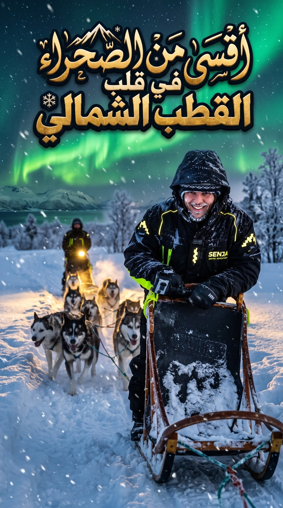

معاناة البقاء في القطب الشمالي: طقوس الخروج في البرد القارس!

النص الكامل المعتمد
معاناة البقاء في القطب الشمالي: طقوس الخروج في البرد القارس!
بقلم: عبد الكريم بن ابراهيم الصعب
في المناطق الواقعة ضمن الدائرة القطبية الشمالية، حيث تهبط درجات الحرارة إلى مستويات قاسية وتغيب الشمس لأسابيع طويلة فيما يُعرف بالليل القطبي، يتحول أبسط قرار بشري — وهو مجرد فتح باب المنزل والخطو إلى الخارج — إلى معركة يومية تتطلب استعداداً بدنيّاً وذهنيّاً صارماً.
من داخل كوخ خشبي دافئ في أقصى الشمال النرويجي، يوثّق عبد الكريم بن ابراهيم الصعب المشوار اليومي الشاق الذي يسبق الخروج إلى الصقيع. تبدأ الطقوس بتجهيز البدلة الحرارية القطبية الثقيلة، تلك الطبقة العازلة السميكة المصممة لمقاومة الرياح الجليدية والرطوبة القاتلة. ارتداء هذه البدلة ليس عملية سريعة؛ بل هو جهد بدني متكامل يتطلب خلع الملابس العادية، وإدخال الساقين والذراعين في طبقات عزل سميكة تقيد الحركة وتُشعر الجسد بالثقل منذ اللحظة الأولى.
ولا تكتمل معادلة البقاء دون حماية القدمين؛ إذ تُترك أحذية المشي الجبلي (Hiking Boots) بجوار المدفأة مسبقاً لاكتساب الدفء قبل ارتدائها، ثم تُحكم أربطتها وتُغلق حواجز البدلة السفلية بدقة متناهية لضمان عدم تسلل ذرة ثلج واحدة إلى الداخل، لأن تبلل القدمين في هذه البيئة لا يعني مجرد انزعاج عابر، بل يشكّل خطراً مباشراً على سلامة الإنسان.
وسط هذا العناء اليومي، يبرز البُعد الإنساني والروحي للمسافر المسلم؛ فالبقاء طوال النهار داخل هذه البدلة الثقيلة لا يعيق حرية الحركة فحسب، بل يجعل أداء العبادات والوضوء للصلاة تحدياً حقيقياً يتطلب صبراً ومشقة مضاعفة.
كلمة وتعقيب عبد الكريم بن ابراهيم الصعب:
«حين تعيش هذه التفاصيل القاسية بنفسك، تدرك حجم المعاناة التي يكابدها سكان هذه المناطق يومياً لمجرد ممارسة حياتهم الطبيعية، وتستشعر عظيم نعم الله علينا في بلادنا من دفءٍ ويسرٍ وسهولة في الحركة والعبادة. كل رحلة في أصقاع الأرض هي درسٌ في الصبر والامتنان، وتذكير بأن نترك أثرًا طيبًا ورسالة وعي قبل أن نغادر.»